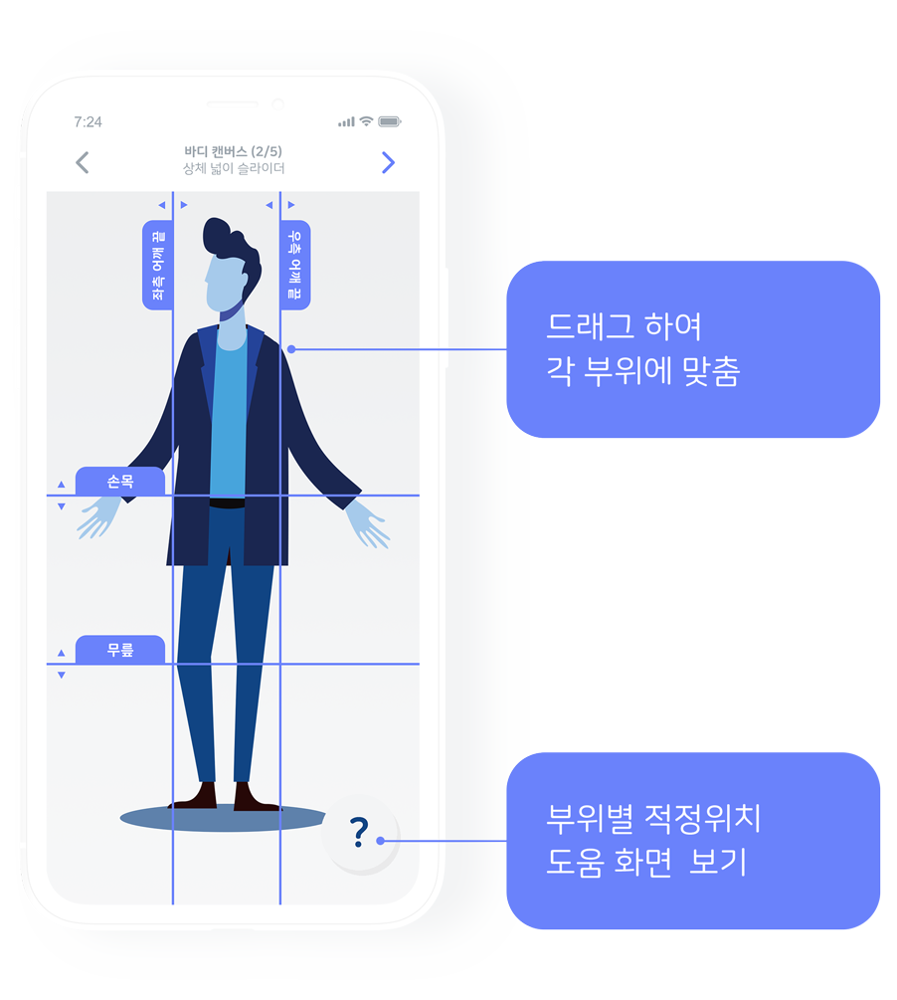

가나다 :: 서비스 :: 서비스문서
사이즈 측정
가장 간편한 사이즈 측정
앞 모습 전신사진 한장만 촬영하면 됩니다.
촬영할때, 피촬영자의 모습이 '정수리','발뒤꿈치' 가이드선 안에 들어오도록 맞춰주세요. 물론 너무 정확할 필요는 없습니다. 다음 단계에서 다시 조절할 수 있기 때문이죠.
최대한 스마트폰의 각도를 직각이 되도록 맞춰주세요. 촬영이 가능해지면 화면에 안내 문구가 나타납니다.
웨어비 바디캔버스™
가이드선을 내 신체부위에 맞춰주세요.
촬영된 모습위에 가이드선들이 나타납니다.
각 가이드 선에 적혀있는 부위별로 이미지 속 신체에 맞춰주세요.
각 가이드선은 상하 또는 좌우로 움직입니다.
해당 가이드선을 어느 부위에 맞추어야할지 모르겠다면, 우측하단에 위치한 물음표를 클릭하세요!

웨어비 바디캔버스™
가이드선을 내 신체부위에 맞춰주세요.
촬영된 모습위에 가이드선들이 나타납니다.
각 가이드 선에 적혀있는 부위별로 이미지 속 신체에 맞춰주세요.
최대한 스마트폰의 각도를 직각이 되도록 맞춰주세요. 촬영이 가능해지면 화면에 안내 문구가 나타납니다.
해당 가이드선을 어느 부위에 맞추어야할지 모르겠다면, 우측하단에 위치한 물음표를 클릭하세요!
끝
오차범위는 ±10mm 이내 입니다.
이제부터 웨어비가 피촬영자의 신체치수를 측정하게 됩니다.
B2C :: 웨어비의 기능

Copyright © All rights reserved | GANADA PROJECT | license